Jester-Knight
Literature
Film
Music
Visual Art
Tributes
Submissions
Links
Contact
Hawk Alfredson
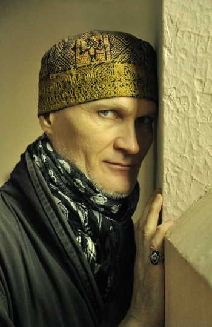
Living outside his native homeland for nearly two decades, Hawk Alfredson has maintained an unmistakable Northern-European quality to the tone and technique imbibed in his work. Hawk’s painting invites sensual observation and embodies the paradox of timelessness. Therefore, it is no surprise to see that in 2006, Art & Antiques Magazine proclaimed Mr. Alfredson as “one of the most collectible of the European Contemporary Surrealists of the new Century.”
Hawk arrived to New York in 1995 and quickly garnered 19 group shows and 2 solo shows all within his first year. During this time, New Art International hailed Mr. Alfredson as “the darling of the New York underground art scene.” As Hawk reflects on this time period he has this to say: “There wasn’t a day in the mid-90’s when my work wasn’t up on some wall somewhere in New York City. The art scene was very concentrated…show opportunities flowed and even overlapped to the next. It was an incredibly delirious and exciting time.”
Besides exhibiting at exotic locales such as nightclubs and avant-garde fashion shows, Hawk has also exhibited his work at prestigious spaces including The Katonah Museum (in a group exhibition curated by Thelma Golden of The Whitney Museum), Japan’s Prefectoral Museum, New York’s Alternative Museum, Australia’s Regional Art Museum in Orange, NSW, and the historic Nordiska Museet in Stockholm, Sweden. Gallery exhibitions can be counted in the hundreds and include Los Angeles, San Francisco, Chicago, Boca Raton, Boston and Baltimore along with his ubiquitous showings throughout New York City. Hawk has also shown work in Rome and in Paris and most recently, Stockholm, where he was invited to participate in an art event celebrating the life of acclaimed Swedish playwright August Strindberg.
While living in the renowned Hotel Chelsea from 2001–2010, hundreds of international visitors had the opportunity to discover and enjoy Mr. Alfredson’s work every year. During those nine years, prominently displayed in the hotel’s lobby and also throughout ten floors of it’s Victorian staircase were over 50 examples of Hawk’s work. Visiting documentarians and photographers frequently sought out Hawk’s elusive presence for interviews regarding his work and personal commentary on the energetic milieu of the hotel’s artistic scene in which his dynamic oil paintings simultaneously influenced and thrived.
Abel Ferrara’s documentary, Chelsea on the Rocks, features Hawk speaking candidly on his, at times, shocking experiences while living and painting within the walls of the Hotel Chelsea. Other films to include Hawk’s original artwork: Ocean’s 13 (Warner Bros.), Mystery Men (Universal), and I AM LEGEND (Warner Bros.). In fall 2013 Medicine Man (Bleu Productions/GHVille Inc.) was released, which features a large commissioned work in oil by Mr. Alfredson specifically for this film.
He is also the subject of a new book entitled Players of Strange, Meaningless Games: The Art of Hawk Alfredson by Hector Gramme, available here through Amazon.com.
Also visit:
http://www.hawkalfredson.com
http://www.facebook.com/artofhawkalfredson
Artist Statement
“Alfredson's paintings provide a direct link between that which is consciously unknown and that which the unconscious instinctively knows. One has the distinct feeling when viewing his astonishing paintings that he has accessed some form of metaphysical knowledge that he has skillfully translated into physical form" Dianna Stallone ~ art curator, Northhampton, MA.
The more time advances, the more reticent I feel toward verbalizing my art. I feel similarly to Jean Cocteau who once said, "An artist cannot speak about his art any more than a plant can discuss horticulture." Images enter my mind both day and night and I often feel compelled to express them as quickly as they come. I work intuitively. When I begin a painting, I have no definitive destination. Rather, while I work I encourage subliminal ideas and cosmic forces to collaborate with the process. What I am hoping to achieve when I paint is a sense of mystery and beauty ~ I wish to create a vision that not even I, the creator, fully understands. I usually describe my imagery as Magical Realism. I want to transport the viewer into an altered state of consciousness where she or he may be inclined to experience who they truly are when they are free of mundane thoughts. My paintings act as mirrors or Rorschach tests, the viewer perceiving the images filtered through their own reality.
Art
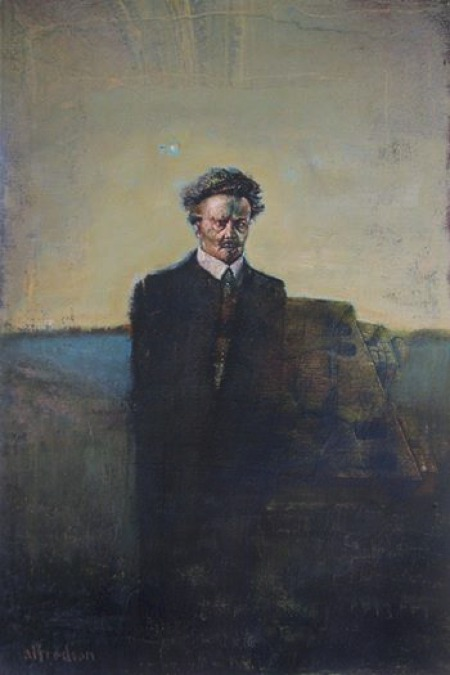
Stringberg in Ambergris
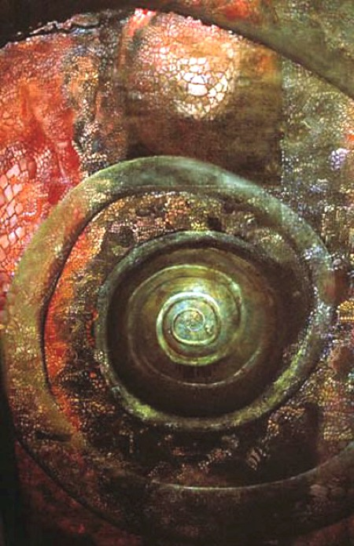
The Final Transforming Stages
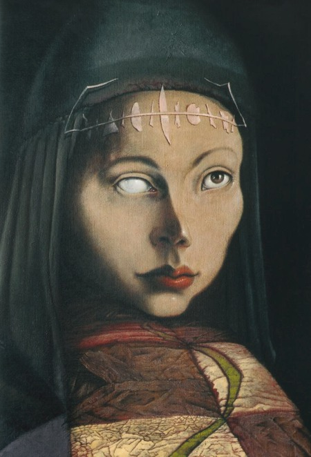
The One-Eyed Angel of Your Rising Moon
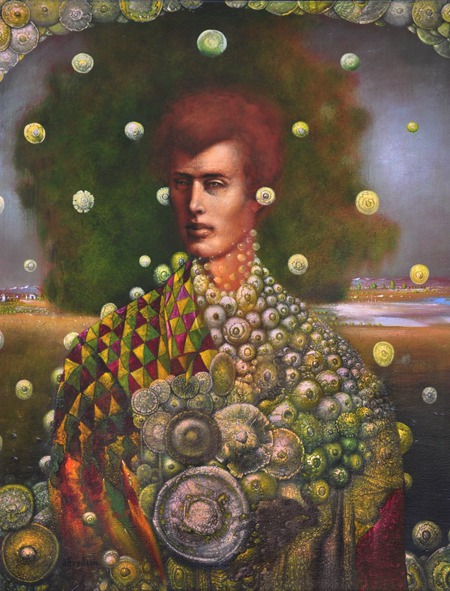
The Young Edvard Munch Imitating a Silent Tree
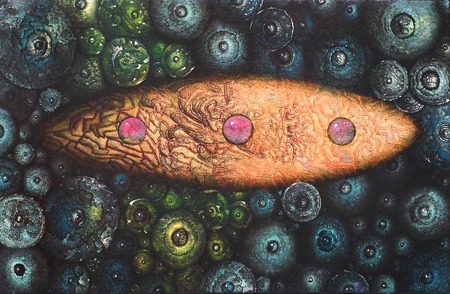
UFO Surrounded by Circlings
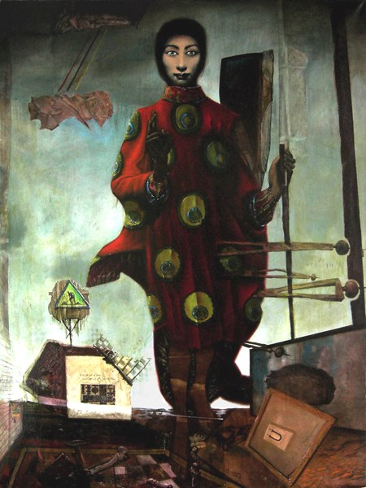
Stebuklingas Drugelis

The Dragon's Mreath
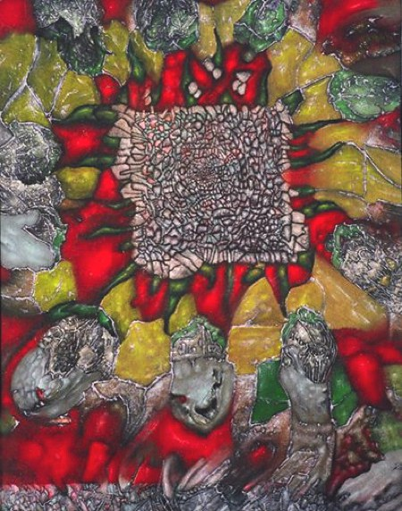
Thyme Whirled
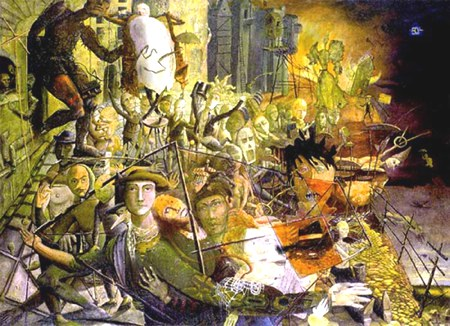
Yaraia
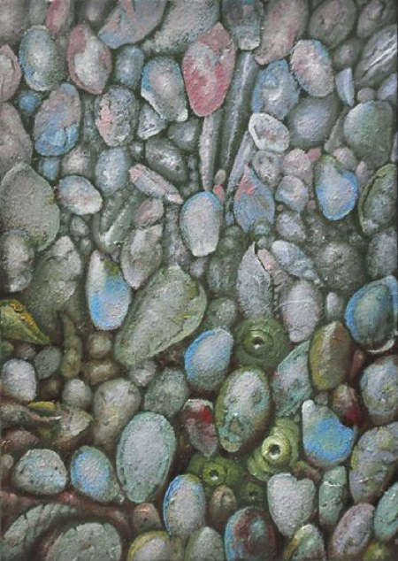
Zen Stones
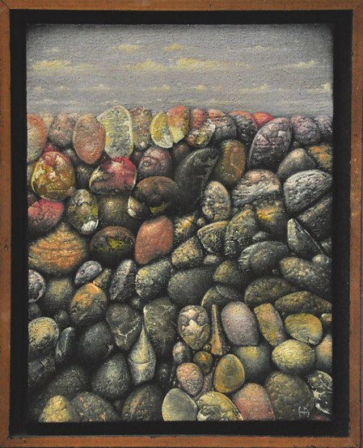
Zen Stones with Skyscape
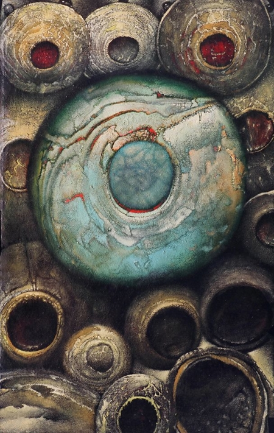
Blue World Circlings
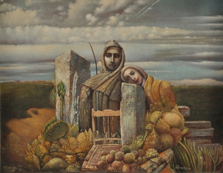
Gypsum
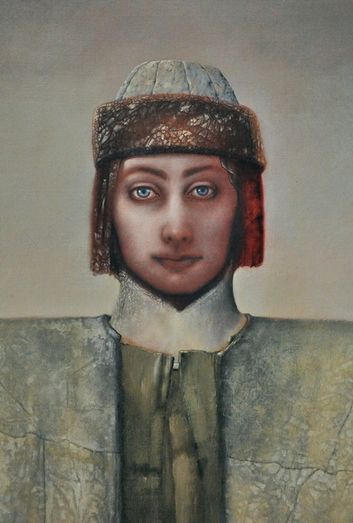
Icon for an Unknown Religion
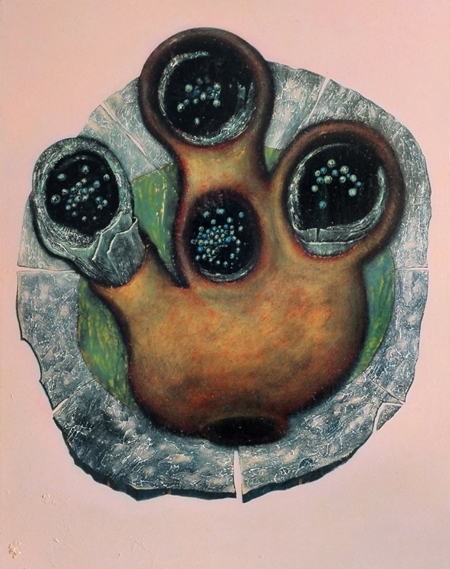
Nostradamus' Last Words
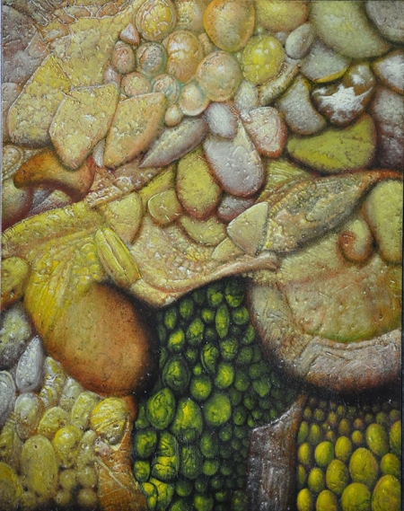
Oil & Gold
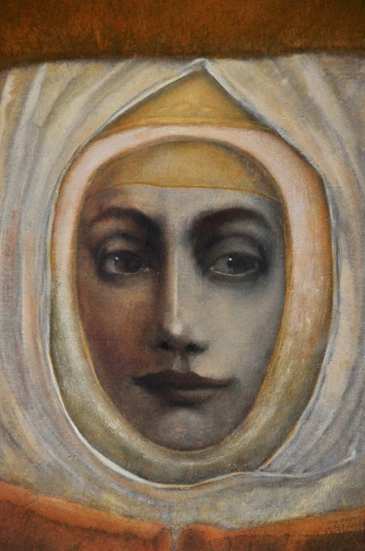
Soar Aurora